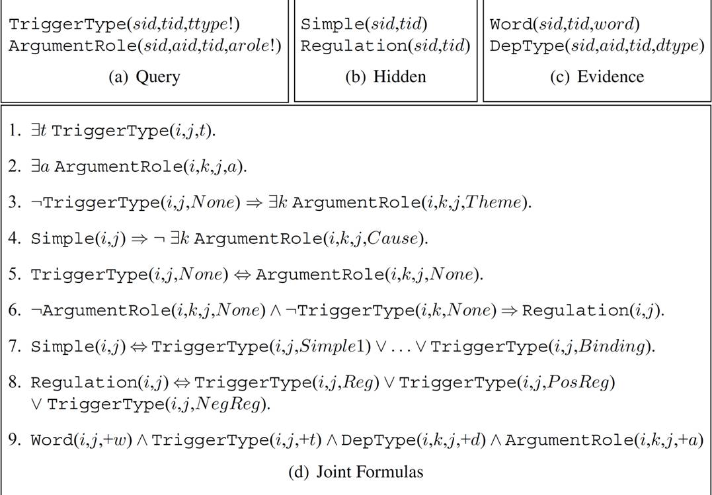

Relieving the Computational Bottleneck: Joint Inference for Event Extraction with High-Dimensional Features
Deepak Venugopal, Chen Chen, Vibhav Gogate, and Vincent Ng.
Proceedings of the 2014 Conference on Empirical Methods in Natural Language Processing, pp. 831-843, 2014.
Click here for the
PDF version.
The talk slides are available here.
Abstract
Several state-of-the-art event extraction systems employ models based on Support Vector Machines (SVMs) in a pipeline architecture, which fails to exploit the joint dependencies that typically exist among events and arguments. While there have been attempts to overcome this limitation using Markov Logic Networks (MLNs), it remains challenging to perform joint inference in MLNs when the model encodes many high-dimensional sophisticated features such as those essential for event extraction. In this paper, we propose a new model for event extraction that combines the power of MLNs and SVMs, dwarfing their limitations. The key idea is to reliably learn and process high-dimensional features using SVMs; encode the output of SVMs as low-dimensional, soft formulas in MLNs; and use the superior joint inferencing power of MLNs to enforce joint consistency constraints over the soft formulas. We evaluate our approach for the task of extracting biomedical events on the BioNLP 2013, 2011 and 2009 Genia shared task datasets. Our approach yields the best F1 score to date on the BioNLP'13 (53.61) and BioNLP'11 (58.07) datasets and the second-best F1 score to date on the BioNLP'09 dataset (58.16).
BibTeX entry
@InProceedings{Venugopal+al:14a,
author = {Deepak Venugopal and Chen Chen and Vibhav Gogate and Vincent Ng},
title = {Relieving the Computational Bottleneck: Joint Inference for Event Extraction with High-Dimensional Features},
booktitle = {Proceedings of the 2014 Conference on Empirical Methods in Natural Language Processing},
pages = {831--843},
year = 2014}
